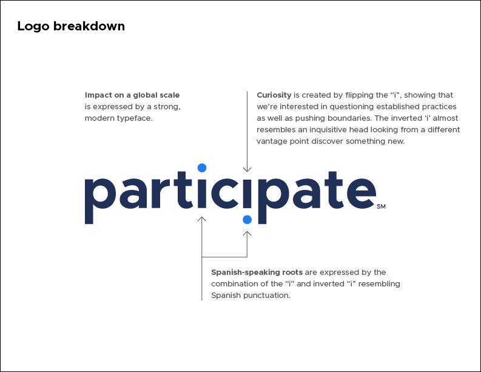
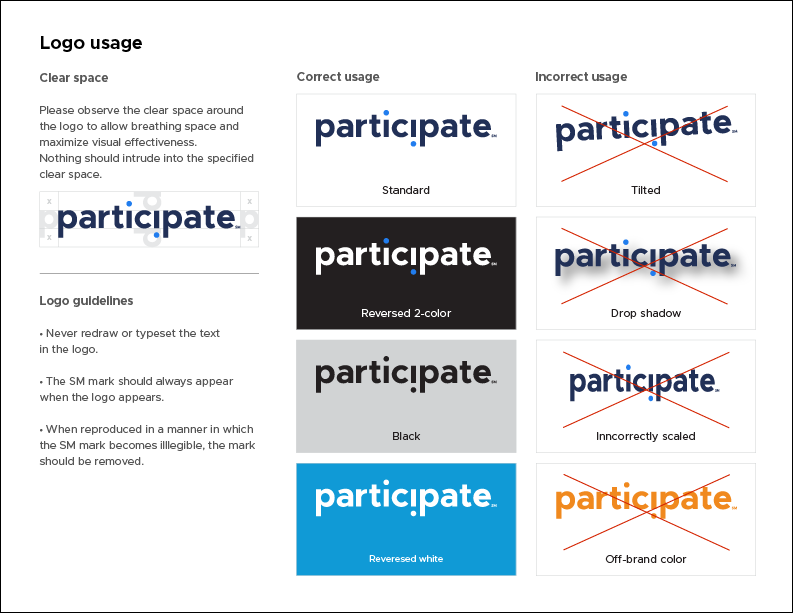

Participate brand
Adobe Creative Suite
I rebranded VIF International Education, a 30-year-old company in the education and cultural exchange industry. I was involved at every stage of the process, from research and ideation, to pitching concepts to stakeholders, to launching the brand and implementing a new style guide.
Ideation
I worked with a design colleague to research new logo designs for the new company name, Participate. This involved taking a deep dive into the company mission, history, services and vision for the future. We tested out iterations and sketches on a large white board over the course of our research phase.
Logo
I made a sketch one day where we flipped the tittle (dot) on the second 'i' in the word 'participate'. The idea began to take life as I realized that the inverted i also represented an inverted exclamation point in Spanish punctuation, which became a selling point in my creative pitch to the executive team.
I ran with the idea and explored typefaces for the design. We settled on Metropolis and customized the logo itself for impact by extending the tails of the letter 'p' so that the tittles would extend further from the character in either direction.

Colors
The previous brand used bright primary-centric colors that reflected a focus on K-12 education. The previous schoolhouse logo featured all of the brand's primary colors, so I created a leading navy-royal blue combination for the logo to add a modern spin, while adding a range of other supplementary colors.
Iconography
I worked with my colleague to develop an icon that could stand in place of the logo in small spaces and as a favicon for web. After some ideation, we settled on an icon that emphasized the letter 'p' with the distinguishing inverted 'i' tittles around a circle.
Final concept
We pitched the concept to stakeholders, who approved the brand and gave us license to start rebranding company assets and market presence. I worked with marketers, program managers and external contractors to develop new advertisements, blog posts, style guides and company signage within style guides we set.
 